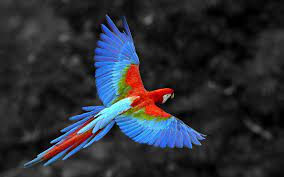
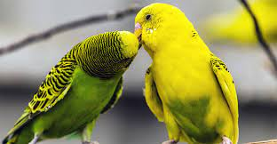

Попугаи, это очень яркие и красивые пернатые. Их оперение окрашено в зелёные, красные, жёлтые, синие, голубые, фиолетовые, чёрные, белые и другие тона и представляет собой всевозможные их сочетания. Кроме того, эти птицы необычайно умны и славятся тем, что у них хорошо развиты память и способность к звукоподражанию.
В природе попугаи едят семена наземных растений, кустарников и деревьев,кору деревьев и кустарников, экзотические фрукты.
 